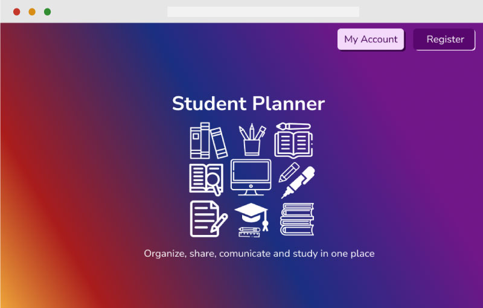
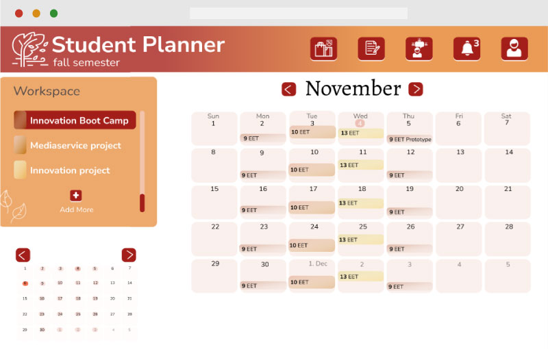

During Innovation Boot Camp program, student had to come up with an innovative idea and make a prototype in Figma.
The idea of this project was to make a student planner platform, that will help to organize a student's schedule. It would remind about an assignments and deadlines, as well as to have all information about a course and all links.
The platform interface changes with a semester season.
Gallery

